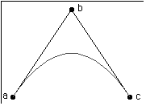

|
|
|
Important for all Apple Printing and Graphics Developers:
The information in this Technote is still relevant up to and including Mac OS 7.6 with QuickDraw GX 1.1.5. Beginning with the release of Mac OS 8.0, however, Apple plans to deliver a system which incorporates QuickDraw GX graphics and typography only. QuickDraw GX printer drivers and GX printing extensions will not be supported in Mac OS 8.0 or in future Mac OS releases. Apple's goal is to simplify the user experience of printing by unifying the Macintosh graphic and printing architectures and standardizing on the classic Printing
Manager.
|
This Technote discusses ConicLibrary.c from the QuickDraw GX Libraries.
This Note is intended for Macintosh QuickDraw GX developers who want to
approximate ellipses and hyperbolas with paths. These, with parabolas
(gxCurves), form the family of curves called conics.
Updated: [June 1 1996]
|
About the GX Libraries
For better or worse, the development of QuickDraw GX took seven years from
conception to initial release. During that time, there were many requests for
feature enhancements and interface improvements that, if implemented, might
have taken seven more years to complete. As it turns out, some of these
enhancements could readily be built on existing services, but there was no time
to test or document these services with the rigor required to make them fully
part of the released system.
The GX Libraries fill this gap by providing services built on top of the rest
of QuickDraw GX in source form. This Technote and others document these
services. Since GX libraries are provided as source, it is reasonable for
developers to modify them to meet their specific needs. Care was taken for the
libraries not to depend on the implementation details of QuickDraw GX so that
future versions should not invalidate them, in original or modified form.
The libraries are likely to evolve to take advantage of improved algorithms, as
well as new Macintosh or QuickDraw GX services. If you modify one for your
application's specific needs, it's worth occasionally reviewing the GX library
provided by Apple to stay synchronized with any improvements.
What is in ConicLibrary.c?
The GX Library, ConicLibrary.c, generates conics, a family of curves that
include circles, ellipses, parabolas and hyperbolas. It was written by Michael
Reed (the guy behind GX Fonts and TrueType) from a math paper derived by Robert
Johnson, the GX resident mathematics professor.
Back to top
Using ConicLibrary.c
A Conic is a gxCurve, Almost
ConicLibrary.c uses the conic struct:
struct conic {
gxPoint a;
gxPoint b;
gxPoint c;
Fixed lambda;
};
|
This is nearly the same as the gxCurve struct; it differs only by the
additional lambda parameter. (Mike was a math major, too.) The lambda specifies
the curvature. If the curvature is equal to one, the conic is a parabola, and
is identical to a gxCurve (also known as a quadratic Bézier) with the
same three points, as illustrated in Figure 1.
In Figure 1, as lambda decreases, the curve approaches the line from
point a to point c. All of these curves are elliptical arcs. When lambda hits
zero, the curve has become a line from point a to point c.
As lambda increases, the curve approaches point b. These curves are hyperbolas.
Once lambda gets big enough, the curve approximates two line segments: one from
point a to point b, and another from point b to point c.

Figure 1: A Quadratic Rational Spline with Vertices (a,b,c)
One reasonable use of the
ConicLibrary provides a graphics application with a means to change the amount
of curvature defined by a quadratic Bézier, a segment of a gxPath. To
increase the curvature, increase lambda.
Conic Functions
Before we get into what the various values for lambda do, let's take a look at
the conic library functions.
NewConic
gxShape NewConic(const conic *curve);
|
NewConic creates a path which approximates the conic. It subdivides the
original conic into a pair of conics, recursively, until the gxCurve described
by the smaller conic has a sufficiently small error. The error is set by the
default path's shape error, which is initially 1.0. You can set it to a larger
or smaller error with:
GXSetShapeCurveError(GXGetDefaultShape(gxPathType), errorValue);
|
DrawConic
void DrawConic(const conic *curve, gxShapeFill fill);
|
DrawConic creates the path shape, draws it with the specified fill, and throws
it away. The fill can be any gxShapeFill value that works with a path;
gxOpenFrameFill is the most common choice.
SetConic
void SetConic(gxShape target, const conic *curve);
|
This replaces the geometry in an existing shape with a path that approximates
the conic.
|
Note:
It is not necessary to understand lambda in mathematical terms. Its usefulness for ConicLibrary.c can be summarized by the following: increasing lambda increases curvature, while decreasing lambda decreases the curvature. |
|
Note:
These functions are orthogonal to other GX Graphics primitives, such as points,
lines, polygons and paths, and other libraries, such as cubics, arcs, ovals and
rounded rectangles. You can rely on functions of the form NewX, SetX and DrawX
for any geometry supported by QuickDraw GX. |
Back to top
The Theory behind ConicLibrary.c
In the discussion that follows, several liberties are taken. Since the reader
is assumed to be a programmer, not a mathematician, most of the equations that
follow are in C++ rather than in mathematical notation. The non-existent
structs fPoint, fCurve and fConic are introduced, to make the code easier to
read. They are defined as:
struct fPoint {
float x;
float y;
};
struct fCurve {
fPoint first;
fPoint control;
fPoint last;
};
struct fConic {
fPoint a;
fPoint b;
fPoint c;
float lambda;
};
|
|
Note:
My apologies to the mathematicians of the world for bastardizing concepts, to
the C programmers of the world for using C++, and to the GX Engineers for using
not using Fixed.
|
There are (at least) two ways of describing conics. First, the ones that use x and y in equations you vaguely remember from high school:
circle: x2 + y2 = 0
parabola: x = y2
hyperbola: x2 - y2 = 1
ellipse: x2/a + y2/b = 0
|
We're going to mostly ignore these, except to note that they can all be
generalized by:
conic: ax2 + bx + cy2 + dy + exy + f = 0
|
This looks suspiciously like the equation describing a parabola (with the right
values of a, b, c, d, e and f) != a gxCurve; and it is. Let's see how.
Describing a Curve
The general conic equation asserts that any equation of order 2 in x and y
describes a conic. A conic, in turn, is described as a plane section of a pair
of cones, stacked point to point. Slicing these cones reveals the familiar
circles, ellipses, parabolas and hyperbolas.
There's another way to describe a parabola: as a parametric equation. A
parametric equation (at least as they are going to be described here) describes
x and y in terms of two equations as a third parameter, t, varies from zero to
one. The equation for a second order parametric equation is:
x = at2 + bt + c
y = dt2 + et + f
|
It's easy to see how this describes at least a non-rotated parabola; setting a
or d to zero allows specifying an xy equation where either x or y is squared.
More importantly for computers, it's easy to turn this equation into a forward
differencing algorithm that allows approximating the curve as a series of lines
with computations no more complicated than adds and shifts.
If the curve described by these equations is limited by t starting at zero and
ending at one, then the curve begins at (c, f) and ends at (a + b + c, d + e +
f). Plugging in 0.5 for t yields the curve's midpoint; i.e., x = a/4 + b/2 + c.
It is convenient to be able to define a curve by where it starts and ends; all
that's missing is some additional information that describes how it
curves. A gxCurve describes a parabolic segment in terms of three control
points, named first, control and last. We can describe those points in terms of
their parametric parameters:
first = c
control = b/2 + c
last = a + b + c
|
The control point is formed by intersecting the tangent lines at the start and
end of the curve. We can express the mid point in terms of first, control and
last by:
mid = a/4 + b/2 + c = c/4 + b/4 + c/2+ (a + b + c)/4 = first/4 +control/2 + last/4
|
Solving for a, b and c results in:
a = first - 2 * control + last
b = control * 2 - first * 2
c = first
|
By substituting the above equations, we can specify a pair of parametric
equations that describe a curve, given three points: (C++ code begins here: )
void CurveXY(const fCurve& cu, floa& x, float& y, const float t)
{
x = (cu.first.x - 2 * cu.control.x + cu.last.x) * t * t +
2 * (cu.control.x - cu.first.x) * t + cu.first.x;
y = (cu.first.y - 2 * cu.control.y + cu.last.y) * t * t +
2 * (cu.control.y - cu.first.y) * t + cu.first.y;
}
|
We can regroup the terms to reference the points' ordinates once:
void CurveXY(const fCurve& cu, float& x, float& y, const float t)
{
x = cu.first.x * ( 1 - t) *
(1 - t) + 2 * cu.control.x * t * (1 - t) + cu.last.x * t * t;
y = cu.first.y * ( 1 - t) *
(1 - t) + 2 * cu.control.y * t * (1 - t) + cu.last.y * t * t;
}
|
Thus, the mid point of the curve is computed to be:
if ( t == 0.5) { // optimize !
x = cu.first.x/4 + cu.control.x/2 + cu.last.x/4;
y = cu.first.y/4 + cu.control.y/2 + cu.last.y/4;
}
|
Perspective geometry tells us that putting the points that describe a gxCurve
or a gxPath through a gxMapping is accurate only if the gxMapping is affine;
that is, it contains scaling, skewing, rotation and translation, but no
perspective. If a gxMapping is a perspective transformation, then a parabola
becomes either a hyperbolic or elliptical segment. If any conic is sent through
a perspective transformation, the result is another conic.
In Technote 1051 - Understanding Conic Splines, we learn that the parametric form for conics can
be represented by sending the parametric equation for a quadratic
Bézier through a perspective transformation:
void FindConicXY(const fConic& con, float& x, float& y, const float t)
{
x = (con.a.x * ( 1 - t) * (1 - t) +
2 * con.lambda * con.b.x * t * (1 - t) + con.c.x * t * t) /
(1 + 2 * (con.lambda -1) * t * (1 - t));
y = (con.a.y * ( 1 - t) * (1 - t) +
2 * lambda * con.b.y * t * (1 - t) + con.c.y * t * t) /
(1 + 2 * (con.lambda -1) * t * (1 - t));
}
|
Note that if we plug in 1.0 for con.lambda, the denominator becomes equal to
1.0; the numerator becomes identical to the CurveXY function derived above.
The mid-point for any conic simplifies to:
if ( t == 0.5) { // optimize !
x = (con.a.x/2 + con.lambda * con.b.x + con.c.x/2) / (con.lambda + 1);
y = (con.a.y/2 + con.lambda * con.b.y + con.c.y/2) / (con.lambda + 1);
}
|
If lambda equals 1, then this becomes:
if (t == 0.5 && con.lambda == 1) { // further optimize !
x = con.a.x/4 + con.b.x/2 + con.c.x/4;
y = con.a.y/4 + con.b.y/2 + con.c.y/4;
}
|
which is identical to the equation for a gxCurve or parabola that we derived
above.
In summary, what do we know?
- A second order parametric equation describes a parabolic segment.
- By adding a weighted divisor, conics can also be described by a parametric
equation.
- If the weight in the conic equation is set to 1, the result is a parabolic
segment.
Without any proof, it's worth knowing that if lambda is greater than 1, the
conic equation describes a hyperbolic segment; if lambda is less than one, it
describes an elliptical or circular segment.
Computing Lambda
Now let's determine the appropriate lambda value for a circular arc. Here's the
decidedly GX-centric approach we'll take:
- Construct a pair of lines perpendicular to the tangents at the arc's ends.
- Define the circle's center to be the intersection of these lines.
- Rotate one of these lines to the mid-angle to define the arc's mid-point.
- Use the arc's mid-point to define the arc's lambda value.
So you can try this on your own, we'll code this as legitimate fixed-point
code.
#include <GraphicsLibraries.h>
#include <assert.h>
void FindCircularLambda(conic& arc)
{
// we need a value for lambda that makes the midPoint equi-distant from
// the circle center. First, we need to find where the hypothetical
// center is. There are many ways to find the circle center; the way
// we'll choose has a GX flavor; we'll construct two radius lines and
// find where they intersect.
// start with the arc tangents from the end points to the control point
gxLine first = {{arc.a.x, arc.a.y}, {arc.b.x, arc.b.y}};
gxLine second = {{arc.c.x, arc.c.y}, {arc.b.x, arc.b.y}};
gxShape line1 = GXNewLine(&first);
gxShape line2 = GXNewLine(&second);
// these lines need to be rotated towards the circle's center.
// knowing the arc direction helps.
gxShape arcShape = GXNewCurve((gxCurve*) &arc);
Boolean direction = (GXGetShapeDirection(arcShape, 1) << 1) - 1;
// -1 counter, 1 clockwise
GXDisposeShape(arcShape);
// if the curve is clockwise, rotate the first 90 degrees clockwise and
// the second 90 degrees counter-clockwise
GXRotateShape(line1, direction * ff(90), arc.a.x, arc.a.y);
GXRotateShape(line2, -direction * ff(90), arc.c.x, arc.c.y);
// while these lines don't touch, make them bigger
while (GXTouchesShape(line1, line2) == false) {
GXScaleShape(line1, ff(2), ff(2), first.first.x, first.first.y);
GXScaleShape(line2, ff(2), ff(2),second.first.x, second.first.y);
}
// now that they touch, find their intersection (line2 becomes a
// gxPoint).
GXIntersectShape(line2, line1);
gxPoint center;
GXGetPoint(line2, ¢er);
// we'll use the tangents to describe the span of the arc.
gxPoint point1 = {arc.a.x - center.x, arc.a.y - center.y};
gxPoint point2 = {arc.c.x - center.x, arc.c.y - center.y};
gxPolar pole1, pole2;
PointToPolar(&point1, &pole1);
PointToPolar(&point2, &pole2);
// now we can rotate the first line so the starting point is at the
// arc's mid point
GXRotateShape(line1, pole2.angle - pole1.angle >> 1, center.x,
center.y);
gxPoint mid;
GXGetShapePoints(line1, 1, 1, &mid);
// given: mid.x = (arc.a.x/2 + lambda * arc.b.x + arc.c.x/2)/(lambda + 1)
// then: 2* mid.x * (lambda + 1) = arc.a.x + 2 * lambda * arc.b.x +
arc.c.x
// then: lambda * 2 * (mid.x - arc.b.x) = arc.a.x + arc.c.x - 2 * mid.x
// then:
Fixed lambda = FixedDivide(arc.a.x + arc.c.x - 2 * mid.x, 2 * (mid.x
- arc.b.x));
Fixed lambda2 = FixedDivide(arc.a.y + arc.c.y - 2 * mid.y, 2 *
(mid.y - arc.b.y));
Fixed error = lambda - lambda2;
if (error < 0) error = - error;
assert(error < 4); // error should be small !
arc.lambda = lambda + lambda2 >> 1; // return average of two
}
|
For this example to work, the arc b point must be equidistant from the a and c
points. For example:
conic arc = {{0, 0}, {ff(125), ff(0)}, {ff(200), ff(100)}};
FindCircularLambda(arc);
DrawConic(&arc);
|
Back to top
Summary
GX Libraries have a wealth of information and show how to use QuickDraw GX to
solve real problems. The Conic Library shows how to use GX to construct paths
that approximate conics, given three control points and a weight.
Reference Material
There are several different directions that conics can be taken. It's possible
that a future version of GX will directly support conics in all of its
primitive operations. Until then, it is straight-forward to take the
information presented here, forget all of it, and read Technote 1051 - Understanding Conic
Splines instead to derive the code to transform conics through
general gxMappings.
Another possible line of development is to adopt the general xy form equation
for conics to use with GX. Foley and Van Damm's venerable Computer
Graphics (2nd edition) from Addison-Wesley presents code for scan
converting conics in their general form.
There are also a number of Internet resources to explore conics further.
Listing them here will likely produce references that quickly grow out of date,
but you might try linking to http://www.geom.umn.edu/apps/conics/ or
http://www.bham.ac.uk/mathwise/syl3_2.htm.
Back to top
References
Technote 1051 - Understanding Conic
Splines
MacOS SDK CD, Development Kits (Disc 1): QuickDraw GX: Programming Stuff: GX
Libraries:
Inside Macintosh: QuickDraw GX Objects
Inside Macintosh: QuickDraw GX Environment and Utilities
Back to top
Downloadables
|

|
Acrobat version of this Note (76K).
|
Download
|
Back to top
|